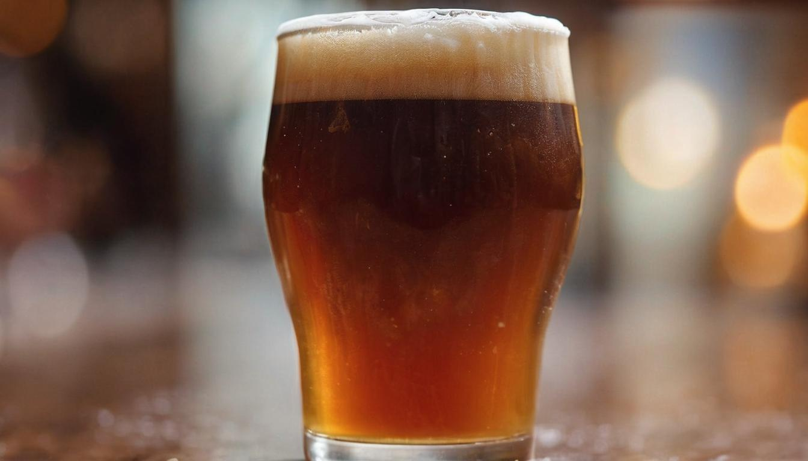
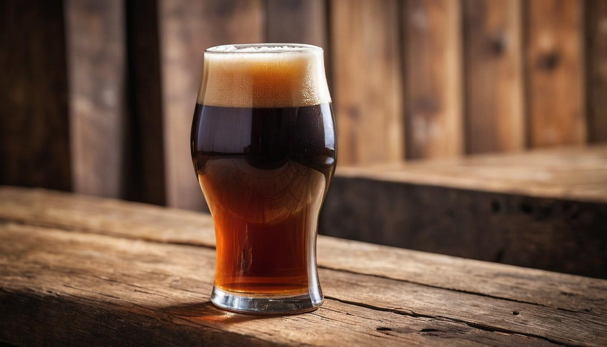
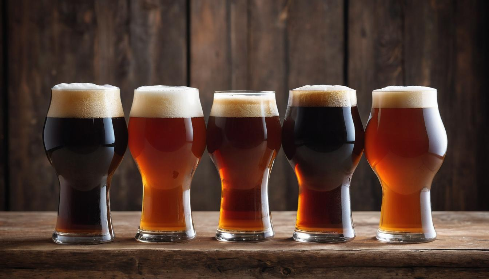

Flavorful Brown Ales
Mastering the art of brewing brown ale involves understanding a complex dance between rich malt sweetness and gentle hop bitterness. For those who appreciate craft beers, there's nothing quite like creating that perfect brew with balanced flavors that can compete with even the best commercial options. Imagine hitting just the right caramel notes and experiencing that perfect pour, knowing you've crafted something exceptional.
But achieving this isn't straightforward; it demands precise attention to detail. Over months of dedicated research, speaking with seasoned brewers, and numerous test batches gone awry before striking gold, we've gathered comprehensive insights to guide you. Did you know that while brown ale hails mainly from England, distinct American versions bring their own unique twists? This guide dives deeply into these differences, so you’ll not only understand what makes brown ale special but also how to brew it successfully at home.
Some popular brands of brown ale include Newcastle Brown Ale, Samuel Smith's Nut Brown Ale, and Sierra Nevada Tumbler Autumn Brown Ale. These brands offer a range of flavors and profiles, catering to different taste preferences.

What is Brown Ale?
Brown ale is a special style of beer often boasting a beautiful dark amber or brown color, setting it apart from other ales. Primarily hailing from England, this classic beer type has an unmistakable malt backbone, giving it a toasty, caramel-like sweetness balanced with mild hop bitterness for a delightful harmony of flavors.
When you take a sip of brown ale, you'll immediately notice the rich maltiness, reminiscent of freshly baked bread or toasted nuts. This rich malt character sets brown ale apart from other styles, appealing to a wide range of beer lovers.
While traditional English brown ales emphasize malt sweetness and subtle hop presence, American variations bring their own twist by showcasing a more pronounced hop profile. This creates an exciting interplay between slightly sweet maltiness and a bolder hop character that adds layers of complexity to the overall flavor.
This contrast in hop profiles allows for nuanced interpretations within the brown ale style, akin to listening to different covers of your favorite song; each version brings its own unique spin while retaining the essence that makes it special.
Brown ales typically range from 4% to 6% in alcohol content, making them versatile and approachable for all levels of beer enthusiasts. Whether you're new to craft beer or a seasoned aficionado, brown ale offers a pleasant and balanced drinking experience—providing just the right amount of complexity without overwhelming your palate.
Now that we have explored what makes brown ale unique, let's move on to unraveling its fascinating brewing process—shedding light on how these delectable flavors are artfully crafted into every batch.
As we journey through the evolution and intricacies of brown ale, it's crucial to dive into its historical roots and origins to understand its enduring legacy.
History and Origins
The journey of brown ale begins in 17th-century England, a time when "brown ale" was a broad term used to describe any dark-colored beer. Back then, the brewing process was more art than science, resulting in a wide variety of beers that fell under this umbrella. As brewing methods evolved, so did the specific characteristics of brown ale.
In the 18th century, a new player entered the beer scene: "mild ale." This brew was distinct from its pale counterparts; it was less hoppy and had a milder flavor profile. This played a pivotal role in standardizing the definition of brown ale as it provided a clear distinction from other beer styles, solidifying its identity within the world of brewing.
The introduction of "mild ale" marked the beginning of brown ale finding its unique place in the world of beers.
Fast forward to the 1920s, and we witness a significant milestone in the history of brown ale - the rise of Newcastle Brown Ale. This iconic beverage not only achieved popularity in England but also made its mark globally, captivating the taste buds of beer enthusiasts around the world. Its success paved the way for the global acceptance and appreciation of brown ale as a distinctive style with its own special characteristics.
As time marched on, American craft breweries took note and began creating their versions of brown ale. These innovative brewers added their unique twists to the traditional recipe, resulting in a diverse array of flavors and profiles. Their creativity gave rise to an entirely new segment within the American craft beer movement, showcasing the adaptability and versatility of brown ale as a standalone beer style.
This integration into American craft beer culture demonstrates how brown ale has transcended geographical boundaries and adapted to local tastes and preferences without losing its inherent essence.
The evolution of brown ale over centuries is a testament to its resilience and adaptability. From its humble beginnings as a generic dark beer to becoming a cherished offering in craft breweries across continents, the journey of brown ale is interwoven with history, innovation, and cultural influence.
Characteristics: Taste, Aroma, and Color

Brown ales stand out in the craft beer world for their deep amber to dark brown hue. When you pour a brown ale into your glass, you're greeted with a visually captivating beer that exudes warmth and richness. The color itself sets the stage for the sensory experience that follows—a promise of depth and complexity.
As you raise the glass to your lips, you're embraced by a taste that skillfully blends nutty, caramel, toffee, and chocolate flavors. These flavor notes are often accompanied by a low to moderate level of bitterness, contributing to the well-rounded profile of the beer. It's this unique blend of flavors that endears brown ales to enthusiasts; each sip tells a fascinating story of its own.
Picture yourself relishing roasted nuts drizzled with caramel and a hint of chocolate—this is the delightful taste journey that brown ales offer. The interplay between these flavors creates a symphony on the palate, making it a go-to choice for those seeking richness with approachability.
Furthermore, the aromatic profile of brown ales perfectly complements their flavor composition. As you lift the glass to your nose, inviting scents of toasted nuts, rich caramel, and occasionally a hint of dark fruit greet you. These aromas harmonize seamlessly with the malt-forward flavor profile, enhancing the overall drinking experience and drawing you further into the complexity of the brew.
In summary, brown ales present a captivating combination of flavors and aromas that strike a balance between depth and approachability. This makes them an enticing choice for both seasoned beer enthusiasts and those new to craft beer exploration.
Having explored the captivating characteristics of brown ales, let's now dive into the diverse popular style variations that have emerged within this beloved category of craft beer.
Popular Style Variations

When it comes to brown ale, each region has its own interpretation, showcasing a unique set of flavors and aromas. From the malt-forward English brown ale to the more hop-forward American variation and the complex Belgian style, there's an array of options to suit every palate.
English Brown Ale
English brown ales are known for their malt-forward profile, boasting a rich tapestry of flavors that include toffee and subtle nuttiness. These ales, with Newcastle Brown Ale being a standout example, typically exhibit a gentle bitterness and are less hoppy compared to other styles. The emphasis on malt sweetness creates a comforting drinking experience, making these brews popular choices for those who enjoy a smoother, less bitter beer.
American Brown Ale
In contrast to their English counterparts, American brown ales such as Sierra Nevada Tumbler often feature a more assertive hop presence. This results in a delightful interplay between robust malt sweetness and citrus or piney hop aromas. The bolder hop character complements the malt backbone, offering a balanced yet more pronounced flavor profile. This style appeals to those seeking a fusion of malty richness and vibrant hoppy notes in their beer.
Belgian Brown Ale
Meanwhile, Belgian brown ales exemplify the art of complexity in brewing. Incorporating unique yeast strains, as seen in Leffe Brune, these beers boast intricate layers of flavors. Fruity and spicy notes derived from the yeast fermentation process create an entirely different drinking experience, adding depth and character to the brew. The Belgian variation embraces an array of tastes and aromas that elevate the drinking experience to a higher level of sensory pleasure.
Each style variation possesses its own distinct charm, offering beer enthusiasts an opportunity to explore different dimensions of the beloved brown ale. Whether you prefer the comforting embrace of malt-forward English browns, the vibrant interplay of hops in American browns, or the captivating complexity of Belgian browns, there's something for every discerning palate to savor in this versatile beer category.
As we journey further into unraveling the secrets behind crafting these diverse brown ales, let's dive into the intricacies of their brewing process and the key ingredients that contribute to their distinct characters.
Brewing Process and Ingredients
Brewing a distinctive brown ale is a careful craft that demands skill and precision, from the selection of ingredients to the meticulous brewing process. The key elements of making a great brown ale are malt selection, hops, yeast, and the brewing steps involved.
Malt Selection
The foundation of a captivating brown ale lies in the careful selection and blend of malts. Typically, brewers use a combination of pale malt, chocolate malt, and caramel malt to achieve the rich color and complex flavor profile that defines a classic brown ale.
Crafting a captivating brown ale is akin to composing a symphony—each malt variety plays a distinct role in harmonizing the flavors, resulting in a well-balanced brew. Moreover, the roasting process for malts impacts the beer's color, aroma, and taste profile.
Hops and Yeast
In brown ales, hops are used primarily for their mild bitterness and aromatic contributions, rather than strong, assertive flavors dominant in other beer styles. English hop varieties such as Fuggle or East Kent Goldings are commonly employed to provide subtle earthy and floral notes that complement the malt-forward character of brown ales.
Furthermore, yeast strains play a crucial role in determining the final flavor profile of the beer.
Brewing Steps
- Mashing: This initial stage involves combining crushed malt with hot water to facilitate enzyme activity, converting starches within the malt into fermentable sugars.
- Boiling: The wort—an unfermented beer—is boiled while hops are added at specific intervals to balance the sweetness of the malt with delicate bitterness and aromatic qualities.
- Fermentation: Once the wort is cooled to an optimal temperature range, yeast is introduced to initiate fermentation—a transformative process where sugars are converted into alcohol over several days to weeks.
- Conditioning: Following primary fermentation, the beer undergoes a maturation period known as conditioning before packaging.
This brewing process is akin to crafting fine artwork; each stage demands careful attention and skillful execution to create an exquisitely balanced brown ale with layers of flavor and aroma.
Understanding the intricate interplay between various malts, hops, yeast strains, and methodical brewing techniques sheds light on how brewers craft delightful brown ales with their distinctive profiles—celebrating tradition while embracing innovation in every sip.
As we embark on exploring new dimensions in the world of craft beer, let's now turn our attention to uncovering the perfect complements and accompaniments for savoring the delightful nuances of brown ale—elevating its indulgence into a truly immersive experience.
Serving Suggestions and Pairing
Imagine sipping on a glass of rich, dark brown ale. The flavors dance on your palate, creating a symphony of taste. It's like experiencing a perfect marriage between the hops, malt, and yeast. But how can you elevate this experience even further? The temperature at which you serve your brown ale plays a crucial role in unlocking its full potential.
For optimal enjoyment, brown ales are best served at a temperature range of 50-55°F (10-13°C). This allows the complex flavors to shine, revealing the full spectrum of malt sweetness and subtle bitterness. Much like how fine wine needs to be served at the right temperature, brown ale requires the same care and attention.
When it comes to pairing brown ale with food, prepare for a delightful gastronomic adventure. The versatile nature of brown ale makes it an exceptional companion with a wide array of dishes.
The malt sweetness and moderate bitterness of brown ale complement hearty flavors exceptionally well. Picture relishing a bottle alongside succulent grilled meats or indulging in its company while enjoying a comforting bowl of flavorful stew. The bold yet balanced profile of the beer adds depth to these dishes, contributing to an unforgettable dining experience.
In addition, roasted vegetables find an ideal partner in brown ale. The beer's earthy notes harmonize with the smoky nuances of the vegetables, culminating in a marriage of flavors that delights the senses.
For cheese enthusiasts, serving brown ale with nutty cheeses such as aged Gouda is an unparalleled delight. The rich flavors of the cheese meld with the beer's complexity, creating an exquisite pairing that leaves a lasting impression.
And let's not forget desserts! The caramel notes present in a brown ale elevate the flavors of decadent treats like chocolate cake and bread pudding. This contrast of sweet and malty undertones adds an indulgent final touch to any meal.
Whether it's enhancing savory dishes or elevating sweet endings, the versatility and nuanced flavors of brown ale create endless possibilities for memorable culinary pairings, making it an essential addition to any discerning beer enthusiast's repertoire.
The world of craft beer is one filled with exploration and delight. From brewing methods to flavor profiles and culinary combinations, every sip tells a story, and every pairing creates an experience worth savoring. Embrace the journey through these captivating nuances and let your love for craft beer flourish. Cheers!